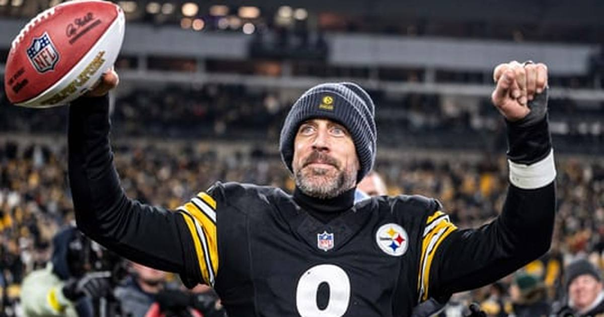

First Place in the AFC North Is on the Line: Browns Visit Steelers in a 5-2 Rivalry Game
Two 5-2 rivals meet at Acrisure Stadium on Sunday at 1:00 PM ET on CBS, with Pittsburgh a 3.5-point favorite over Cleveland.

There is nothing cute about this one. The Cleveland Browns (5-2) visit the Pittsburgh Steelers (5-2) at Acrisure Stadium on Sunday at 1:00 PM ET on CBS, with first place in the AFC North on the line, and the market has it Pittsburgh -3.5, total 38.5, moneyline Steelers -185 / Browns +154, via the ESPN scoreboard's DraftKings odds.
Two teams with the same record, a rivalry game, a low total, and a division lead at stake. That is a November football game in its purest form: it will probably be ugly, it will probably be close, and it will probably come down to which offensive line holds up and which secondary survives.
The matchup
Both teams are expected to start their veteran quarterbacks — Deshaun Watson for Cleveland, Aaron Rodgers for Pittsburgh — and both defenses have something to prove. Pittsburgh's front is whole and dangerous, which is exactly why Cleveland's biggest injury news of the week matters so much: right tackle Tytus Howard, who suffered a concussion in Week 7 against Tennessee and missed every practice this week, cleared concussion protocol on Saturday and carries no injury designation. Against this Steelers defensive line, that clearance is not a footnote. It is the game.
Cleveland, for once, is the healthy team. Nobody on the Browns' roster is ruled out. Pittsburgh, meanwhile, is thinner in the secondary than it was a month ago, and that is where a low-total rivalry game usually gets decided — one busted coverage, one third-down conversion that should not have happened.
Injury report
Cleveland: Right tackle Tytus Howard cleared concussion protocol Saturday and will start. Defensive tackle Mike Hall Jr. is back after missing three games with an ankle injury. Cornerback Myles Harden (hamstring) and safety Daniel Thomas (ankle) are questionable. Long-term losses: linebacker Jeremiah Owusu-Koramoah remains on the physically unable to perform list with a neck injury, and guard Teven Jenkins is on injured reserve with a back injury.
Pittsburgh: Cornerback Brandin Echols (hamstring) and defensive back Doneiko Slaughter (hamstring) are out. Wide receiver Ben Skowronek (calf) is questionable. Edge rusher Alex Highsmith is confirmed active. Cornerback Jalen Ramsey has no injury designation but is playing through a fractured right wrist, with his reps being managed.
Storylines to watch
1. The division lead. Both teams are 5-2 and first place in the AFC North is on the line. Tiebreakers in November matter more than anyone admits in November.
2. Howard vs. the Steelers' front. Howard missed all three practices and still got cleared in time. If he holds up, Watson has a chance. If he doesn't, Pittsburgh's pass rush gets to tee off, and a 38.5 total starts to look generous.
3. Pittsburgh's secondary. The Steelers ruled out two defensive backs and are managing Ramsey's wrist. Cleveland's passing game does not need to be great here — it needs to be opportunistic, and a thin secondary is how opportunistic happens.
No bet pick in this preview — the picks live in their own posts. This one is about the stakes: 5-2 vs. 5-2, first place, and a rivalry that rarely disappoints even when it doesn't light up the scoreboard.
Sources: ESPN NFL scoreboard, Week 8 (DraftKings odds), Steelers Wire — How to watch Steelers vs. Browns, The Game Haus — Browns injury report heading into Week 8, Orange and Brown Report — Browns news and rumors 11/1/26, Steelers Depot — Steelers vs. Browns Week 8
Gear up: Fanatics